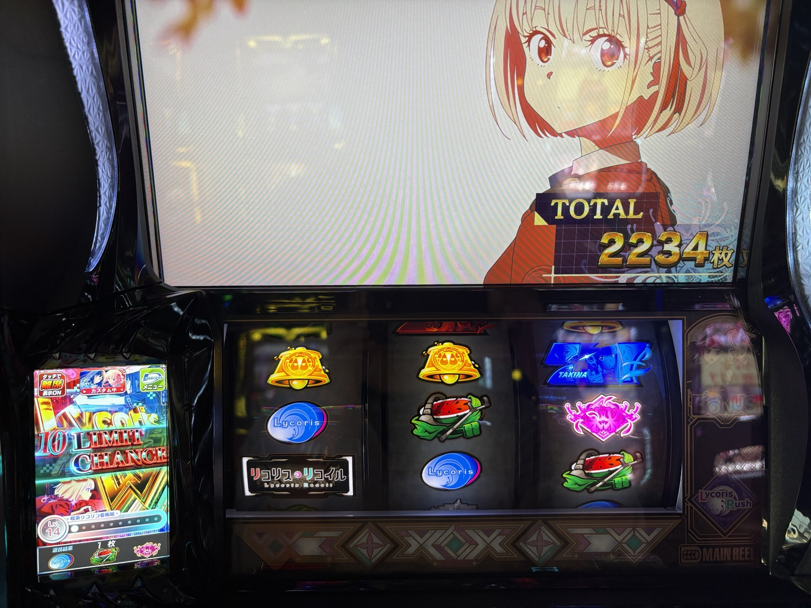

機種ガイド
リコリコ｜設定示唆の重要度一覧とモード別終了画面
終了画面・トロフィー・プロローグ・エピソード・ランプを整理。設定示唆を読む条件と出典を確認できます。
設定示唆要素
S＝設定候補を絞れる濃厚演出、A＝強示唆、B＝弱示唆。スロ探究の独自評価であり、確率・メーカー格付けではありません。条件・種類で重要度が変わる項目はA/Bと表記。
重要度順の一覧
S｜サミートロフィー
| 色 | 示唆 |
|---|---|
| 銅 | 設定2以上濃厚 |
| 銀 | 設定3以上濃厚 |
| 金 | 設定4以上濃厚 |
| キリン柄 | 設定5以上濃厚 |
| 虹 | 設定6濃厚 |
通常RUSH・RUSH Wの終了時に確認。出現しないことは設定1の確定材料になりません。出現率は総回転数帯や店舗カスタムの影響があるため、未出現だけを過大評価しません。
解析メディア出典：一撃：サミートロフィー。確認日：2026.10.12。メーカー公式値とは区別します。
評価理由・記録方法を読む
重要度の理由
出現時に設定候補を絞れるためS。銅もSですが、設定2以上と設定6では得られる情報の範囲が違います。
記録すること
色・確認時点の総ゲーム数・通常RUSHかRUSH Wか。
S / A / B｜ラッシュ終了画面
まず通常RUSHか上位RUSH Wかを確認し、次にキャラと服装を見ます。同じ私服でも、直前のモードによって示唆が変わります。
たきな／千束／上位W
制服／私服／その他
デフォルト／弱／強／設定以上
私服は「直前のキャラとの組み合わせ」が大切
以下は条件を比較する文字の図解です。私服画面の実写真ではありません。
たきなRUSH → たきな私服
千束RUSH → 千束私服
高設定示唆・弱高設定の確定ではありません。
たきなRUSH → 千束私服
千束RUSH → たきな私服
設定4以上濃厚キャラの組み合わせまで確認します。
たきな私服／千束私服
どちらも高設定示唆・弱通常RUSHの「異なるキャラ」のルールは使いません。
全終了画面の対応表・詳しい条件
| 画面 | 状況 | 示唆 |
|---|---|---|
| たきな制服 | たきなRUSH後 | デフォルト |
| 千束制服 | 千束RUSH後 | デフォルト |
| たきな私服 | たきなRUSH後／RUSH W後 | 高設定示唆・弱（B） |
| たきな私服 | 千束RUSH後 | 設定4以上濃厚（S） |
| 千束私服 | 千束RUSH後／RUSH W後 | 高設定示唆・弱（B） |
| 千束私服 | たきなRUSH後 | 設定4以上濃厚（S） |
| 千束＆たきなドレスコード | ラッシュ終了画面 | 高設定示唆・強（A） |
| 押上の風景 | ラッシュ終了画面 | 設定2以上濃厚（S） |
| ロボ太 | ラッシュ終了画面 | 設定4以上濃厚（S） |
| ハワイ（千束・たきな・クルミ） | ラッシュ終了画面 | 設定6濃厚（S） |
制服・ドレスコード・風景など、私服以外の画面は上の対応表で確認できます。上位RUSH Wの基本パターンは、たきな・千束いずれかの制服画面です。
たきなRUSHはスイカの才能レベル2、千束RUSHはチェリーの才能レベル2が常時点灯するタイプ。RUSH WのポイントMAX後の前半パート終了時にも画面を確認します。
実写真で見る：千束の制服画面


タップして拡大 ↗この写真は「千束制服」
通常の千束RUSH後なら基本パターン。上位RUSH Wの基本パターンも、たきな・千束いずれかの制服です。
写真だけで直前のモードは分かりません。終了時にモードと画面をセットで記録しておきましょう。
TOTAL2,234枚はATの獲得表示で、設定を示す数字ではありません。
解析メディア出典：一撃：終了画面。確認日：2026.10.12。メーカー公式値とは区別します。
評価理由・記録方法を読む
重要度の理由
設定以上の条件がある画面はS、強示唆はA、弱示唆はB。弱・強は高設定の確定を意味しません。
記録すること
モード・キャラ・服装・通常/上位の区分。デフォルトも母数として残す。
A / B｜初当たりプロローグ
| 映像・タイトル | 示唆 |
|---|---|
| 真島が社内で通話（Time will tell①） | デフォルト |
| ロボ太とウォールナットが電脳空間で会話 | デフォルト |
| 真島がモニターをハッキングして演説（Repay evil with evil） | 高設定示唆・弱（B） |
| 真島がビルの屋上で通話（Time will tell②） | 高設定示唆・強（A） |
プロローグはタイトルが表示されないため、映像の内容で区別。真島の登場だけで判断せず、社内・演説・屋上を確認します。
解析メディア出典：一撃：プロローグ／なな徹で映像特徴を照合。確認日：2026.10.12。メーカー公式値とは区別します。
評価理由・記録方法を読む
重要度の理由
強・弱の示唆を区別して蓄積する補助材料です。1回の強示唆を高設定確定と扱いません。
記録すること
初当たり時の映像、発生回数。
A / B｜通常RUSHのエピソード
| タイトル | 示唆 |
|---|---|
| Easy does it | デフォルト |
| Nothing seek, nothing find | デフォルト |
| Opposites attract | 弱示唆（B）／1回目の選択時のみ有効 |
| Recoil of Lycoris -side 千束＆真島- | 強示唆（A） |
最初の3種類は同一RUSH内で一巡するまで重複しない選択規則があります。弱示唆は「1回目に選ばれた場合」の条件を守り、2回目・3回目を同じ弱示唆として加算しません。千束＆真島は毎回同じ示唆条件として扱います。タイトルは液晶左上で確認。
解析メディア出典：一撃：ラッシュ中のボーナス（なな徹で条件照合）。確認日：2026.10.12。メーカー公式値とは区別します。
評価理由・記録方法を読む
重要度の理由
タイトルだけでなく選択順の条件が必要なため、機械的な出現回数集計は避けます。
記録すること
RUSH番号・同一RUSH内の選択順・タイトル。
A / B｜上位RUSH Wのエピソード
| タイトル | 示唆 |
|---|---|
| More haste, less speed | デフォルト |
| So far, so good | デフォルト |
| Recoil of Lycoris -side リコリコ- | 弱示唆（B）／1回目の選択時のみ有効 |
| Recoil of Lycoris -side ハワイ- | 強示唆（A） |
通常RUSHと別のエピソード体系です。弱示唆は上位RUSH内で最初に選択された場合のみ有効。ハワイのエピソードは強示唆であり、終了画面の「ハワイ＝設定6濃厚」と混同しません。
解析メディア出典：なな徹：上位AT中エピソード。確認日：2026.10.12。メーカー公式値とは区別します。
評価理由・記録方法を読む
重要度の理由
強示唆でも設定確定ではありません。通常と上位、エピソードと終了画面を区別します。
記録すること
上位RUSH内の選択順・タイトル・通常から切り替わった時点。
A / B｜筐体上部ランプ
| 色 | 示唆 |
|---|---|
| 青／黄 | デフォルト |
| 緑 | 高設定示唆・弱（B） |
| 赤 | 高設定示唆・強（A） |
対象はエンディング中、または後半パートのボーナスで1000pt到達後のボーナス消化区間。これらのタイミングのレア役時に確認します。どの状況でも同じ色のランプを設定示唆として扱うわけではありません。
解析メディア出典：なな徹：筐体上部ランプ。確認日：2026.10.12。メーカー公式値とは区別します。
評価理由・記録方法を読む
重要度の理由
対象の発光タイミングで強・弱を集計します。該当場面を経験していなければ未出現は評価対象にしません。
記録すること
対象区間・レア役・ランプ色。
やめどき
通常RUSH終了・RUSH W終了・上位CZ失敗では、直後の状況が異なります。「ATが終わった」という理由だけで、同じ終了ゲーム数を当てはめないでください。このページの情報だけでは、何Gでやめるのがよいかは判断できません。
狙い目
狙い目を考えるときは、AT間・CZ間のゲーム数、設定変更の有無、直前の終了状況、貸出・交換条件を確認しましょう。実戦記事の当選ゲーム数は一例であり、そのまま打ち始めの基準にはできません。
出典・更新履歴
サミー公式：スマスロ リコリス・リコイル：メーカーの機種紹介。上記の示唆一覧は各項目に記した解析メディアを出典とし、メーカー公式値とは区別しています。
2026.10.12：10月12日の実戦記事へのリンクを追加。
2026.10.12：設定示唆8項目と、モード別終了画面の条件を追加。
2026.10.12：機種ガイドを公開。